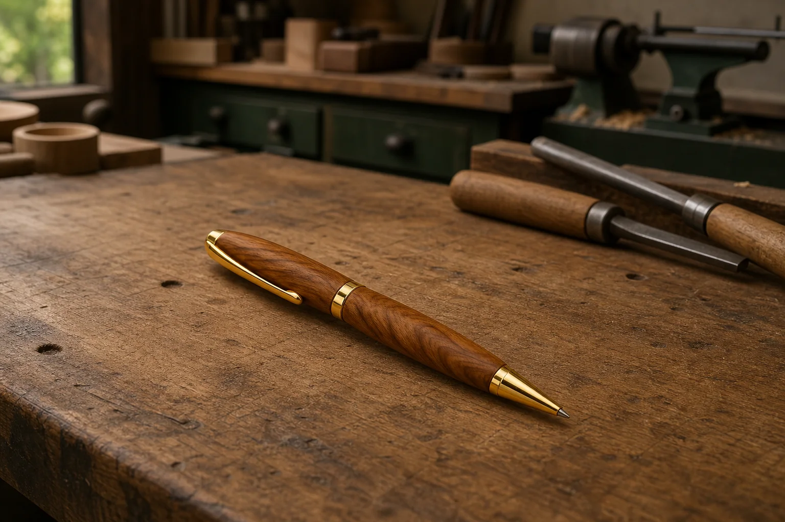
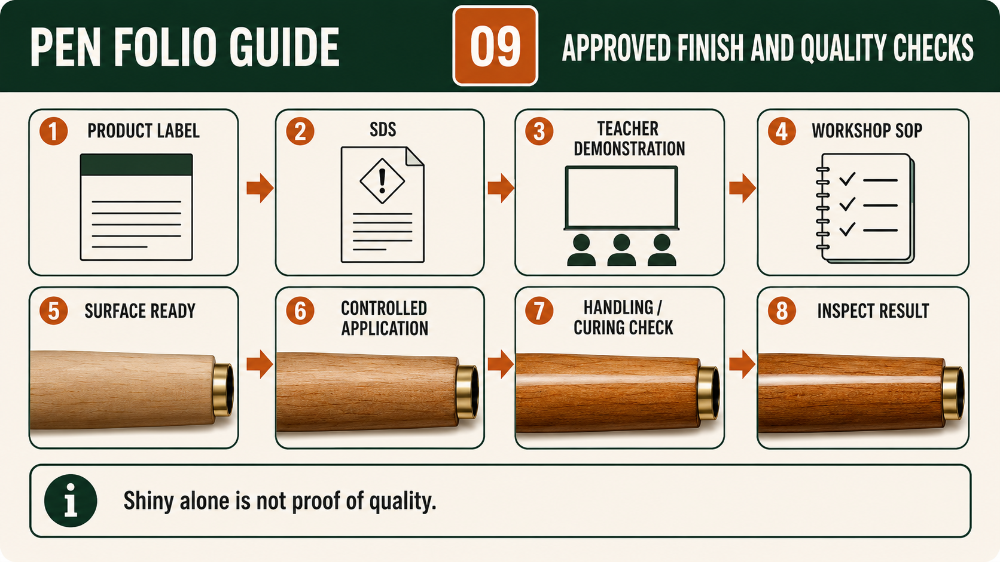
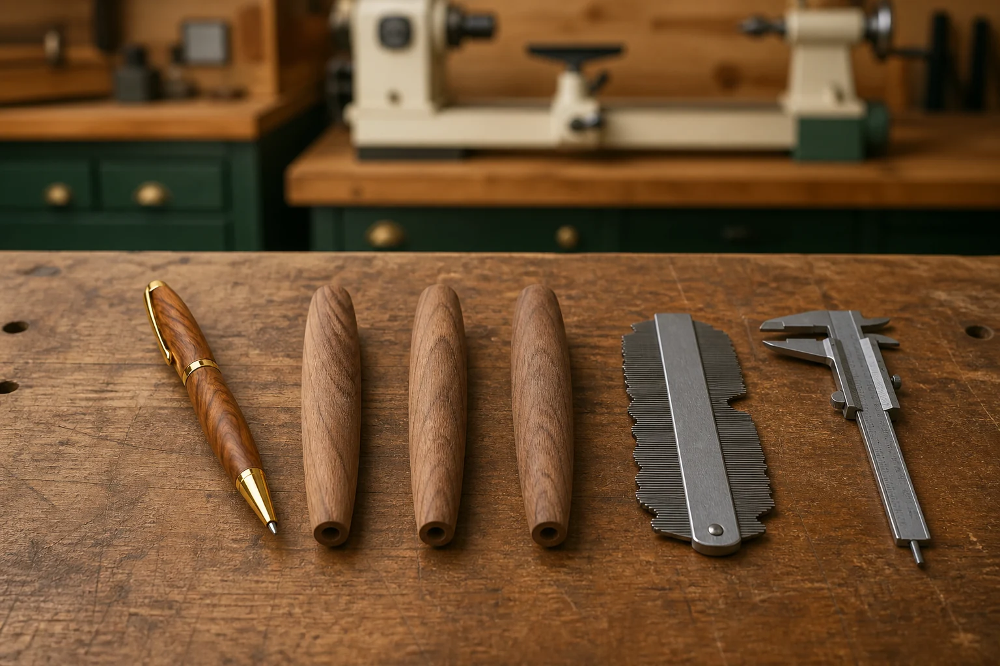

Your work
Student details
Your entries save automatically in this browser. Use Print / Save PDF before leaving the page.
Weeks 15-16
This module
Resolve comfort and appearance within kit constraints, then compare quality systems and production technologies.
Theory 1
Designing a comfortable and visually resolved Pen profile within kit constraints
Designing the Pen profile involves balancing function, appearance and the fixed requirements of the approved kit. A profile is the overall visible form of the two finished timber bodies, including how their surfaces change from one area to another. Students can make design decisions, but those decisions must remain feasible within the supplied kit references and teacher-approved process. The aim is not to create the most unusual shape possible. A successful design feels considered, supports the intended use of the Pen and appears visually connected to the supplied components rather than looking like separate parts forced together.
Ergonomics is the study of how a product relates to the person using it. For a Pen, this includes how the timber bodies may feel when held, how easily the user can control the product and whether the form seems suitable for regular writing. Comfort is not universal because people have different hand sizes, grip habits and preferences. Students should therefore avoid claiming that one shape is comfortable for everyone. Instead, they can develop a reasonable profile, compare it with approved references and gather user judgement. A brief handling observation or feedback comment can provide stronger evidence than simply stating that the Pen feels good.

Visual proportion concerns how the apparent size, weight and shape of one area relate to another. The two timber bodies should appear balanced with each other and with the approved kit components. A form may be technically possible but still look visually heavy, weak, uneven or disconnected. Students can explore alternatives through freehand sketches before practical decisions become permanent. Comparing two or three profile ideas allows the student to explain why one option appears more balanced or better suited to the kit. The teacher checkpoint confirms whether the preferred idea is feasible without inventing dimensions, bush sizes or unsupported construction details.
Grain continuity should also influence the profile. Earlier in the project, the two timber parts were kept aligned using their centre and grain reference. A resolved design respects this relationship by allowing the grain and figure to read across the matched Pen bodies as clearly as the timber permits. Excessive changes in form may interrupt the visible flow or draw attention away from the natural material. Students should compare the paired bodies during approved checkpoints and consider whether the profile supports or competes with the grain. The final judgement should recognise both the design intention and the actual appearance achieved.
Surface transitions are the areas where the Pen body changes direction, fullness or relationship with the approved kit components. Well-resolved transitions appear deliberate and visually controlled rather than abrupt, accidental or uneven. Students should monitor these areas against the supplied kit references and teacher demonstration, using repeated check-decide-act cycles before more material is removed. Decorative exaggeration can conflict with function when it creates an awkward visual imbalance, interferes with handling or makes the Pen appear disconnected from its components. Because removed timber cannot be replaced, ambitious ideas should first be tested through sketches, comparison and teacher discussion.
Folio evidence should show how the final profile developed from informed design decisions. Useful evidence may include labelled freehand sketches, a comparison of alternative ideas, photographs taken at approved turning checkpoints and a short user judgement after the Pen is complete and safe to handle. Captions should explain how ergonomics, proportion, grain continuity and transitions influenced each decision. The evaluation should compare the finished result with the selected sketch and approved kit references, identify where the intention was achieved and record any limitation honestly. This proves that the profile was designed and monitored rather than produced through unplanned material removal.
- Sketch and compare several feasible profile ideas before practical shaping decisions become permanent.
- Consider handling and user judgement without claiming that one profile suits every person.
- Balance the two timber bodies visually with each other and the approved kit components.
- Protect grain continuity and develop controlled surface transitions through repeated checks.
- Use teacher checkpoints to confirm that the preferred design remains feasible within kit constraints.
Theory 2
Standards, quality control and production techniques in Pen manufacture
Standards in Pen manufacture are the agreed expectations used to judge whether the product and process are acceptable. In this school project, those expectations come from the supplied Pen Making resource, the approved kit information, teacher demonstrations, product information and the workshop SOP or SWMS. Students should not invent numerical tolerances, copy settings from another kit or assume that a visually similar Pen follows the same requirements. Standards give the project a reliable reference point, while quality control is the planned process of checking work against those references before small problems become permanent faults.
Quality control begins with material selection rather than waiting until the Pen is finished. The timber is checked for suitability, soundness, visible defects, grain direction and responsible use before preparation begins. During marking, the lengthwise centre and grain reference is checked for clarity so the paired timber parts can remain visually connected. During drilling, the approved setup, secure workholding, regular swarf clearance and hole condition are checked under teacher supervision. These early checkpoints prevent unsuitable material, unclear references or poor preparation from carrying hidden problems into later stages where correction may be more difficult or impossible.
Sleeve preparation and turning also require planned criteria. The two brass sleeves are identified as parts of the matched kit, kept clean and roughened on their outer surfaces by the approved process to support bonding. During turning, students monitor the developing cylindrical forms for consistency, symmetry, grain relationship, surface condition and controlled material removal. Production technique choices are not based on personal preference alone. Cutting, scraping and other approved actions are selected through the teacher demonstration and local procedure according to the stage, timber response and intended result. Students stop when the outcome or setup becomes uncertain.

Surface preparation, finishing and assembly each have their own checkpoints. Before sanding, visible tool marks, torn fibres, ridges and uneven areas are identified so their causes can be understood rather than hidden. The approved abrasive sequence is followed progressively, with clean inspection between stages. Before finishing, the surface is checked for readiness and the actual approved product information, Safety Data Sheet and workshop controls are followed. During assembly, clean contact surfaces, verified orientation, protected timber bodies and controlled alignment are inspected. Increased resistance or misalignment is treated as information to stop, not a reason to apply more force.
Consistency and traceability make quality control more reliable. Consistency means applying the same approved expectations to both Pen bodies and repeating important checks rather than judging one stage carefully and rushing another. Traceability means keeping a record of what was checked, when it was checked, which approved source guided the decision and what action followed. A simple quality-check record might include the project stage, criterion, observation, decision, teacher checkpoint and evidence reference. This allows another person to follow the project history and understand how a final result developed, including any problem that was detected and corrected.
Prevention is more effective than relying on a final inspection. A finished Pen can be examined for appearance, alignment, surface quality and function, but late inspection cannot replace timber that was removed unnecessarily, restore lost grain orientation or undo damage caused during assembly. Effective production therefore uses repeated check–decide–act cycles across the entire project. At each stage, students compare the work with approved references, decide whether it meets the current criterion and act only through the authorised process. Folio evidence should show these checkpoints honestly, proving that quality resulted from planned control, suitable production techniques and teacher-approved decisions rather than luck.
- Use the supplied resource, approved kit information, teacher demonstration and local procedures as the quality standards.
- Check material selection, marking, drilling and sleeve preparation before faults move into later stages.
- Monitor turning, surface preparation and finishing through repeated check–decide–act cycles.
- Stop for unexpected resistance, misalignment, damage or uncertainty during assembly.
- Maintain a quality-check record showing criteria, observations, decisions, teacher checkpoints and evidence references.
Theory 3
Comparing handcraft, jigs and repeat production technologies
Manufacturing a Pen can be understood by comparing three approaches: skilled handcraft, teacher‑approved jigs or workholding, and repeat production technologies used in larger-scale settings. Each approach aims to produce a consistent, functional result, but they differ in how control is achieved, how decisions are made and how work is checked. In this school project, students mainly use handcraft skills supported by approved workholding and teacher guidance. Industrial examples may use more automated or repeat systems, but these are considered conceptually rather than copied into the school workshop.
Skilled handcraft relies on the judgement and control of the individual maker. In the Pen project, this includes reading the approved resource, aligning grain references, observing surface quality and making small, controlled adjustments during turning, sanding and assembly. Handcraft allows flexibility and responsiveness to the actual material, which may vary in grain, figure or condition. However, it also depends on the student’s ability to recognise quality indicators and follow the approved process carefully. Consistency is achieved through repeated checking, teacher checkpoints and disciplined work habits rather than mechanical repetition.

Teacher‑approved jigs and workholding provide a level of consistency and support that complements handcraft. A jig or workholding system helps position or secure parts so they remain stable and aligned during a process. In the Pen project, approved mandrels and other demonstrated supports act as control systems that reduce variation and improve repeatability. These supports do not replace skill; they assist it. Students still need to check alignment, protect finished surfaces and stop for uncertainty. The key idea is that jigs help standardise certain conditions, but quality still depends on correct use and ongoing inspection.
Repeat production technologies, which may be used in industrial contexts, are designed to produce many identical items with high consistency. These systems often rely on controlled setups, standardised inputs and processes that reduce variation between products. In such contexts, quality control may involve programmed checks, specialised fixtures or automated monitoring. However, even in these environments, human responsibility remains important for setup, supervision and responding to unexpected issues. While students do not use these systems in the school workshop, understanding them helps explain why planning, consistency and traceability matter in all manufacturing settings.
Each approach has advantages and limitations. Handcraft offers adaptability and allows the maker to respond to the specific piece of timber, but it may produce variation if checks are not consistent. Jigs and workholding improve stability and repeatability, but they require correct setup and cannot compensate for poor judgement. Repeat production systems can achieve high consistency at scale, but they depend on accurate initial setup and may be less flexible when materials vary. In the Pen project, students combine handcraft skills with approved supports to achieve a controlled and consistent result within the constraints of the supplied kit and teacher guidance.
Folio evidence should show that the student understands these differences and applies appropriate control in their own work. A useful approach is to compare how handcraft decisions, approved workholding and the idea of repeat production each influence quality. For example, a student might explain how alignment was checked manually, how the approved mandrel supported consistency and how an industrial system might aim to reduce variation further. A simple comparison table can help organise this thinking, showing features such as control, consistency, adaptability and responsibility across the three approaches. This demonstrates that the student is not only making a Pen, but also understanding how different production methods influence outcomes.
- Recognise that handcraft relies on skill, observation and repeated checking.
- Use teacher‑approved jigs and workholding to support alignment and consistency.
- Understand that repeat production technologies aim for consistent outcomes at scale.
- Compare how each approach manages control, quality and responsibility.
- Record how these ideas apply to the student’s own Pen manufacturing process.
Guided practice
Weeks 15-16 knowledge checks
Choose an answer, check it and use the progressive hints and feedback to improve.
Apply your learning
Scaffolded written responses
Write first, use the feedback prompts, then compare your reasoning with the model response.
Finish the two-week block
Save your evidence
Your work saves in this browser, but browser storage is not the official submission. Save the completed page as a PDF before changing devices or clearing browser data.
No marks, answers or personal information are sent from this webpage.